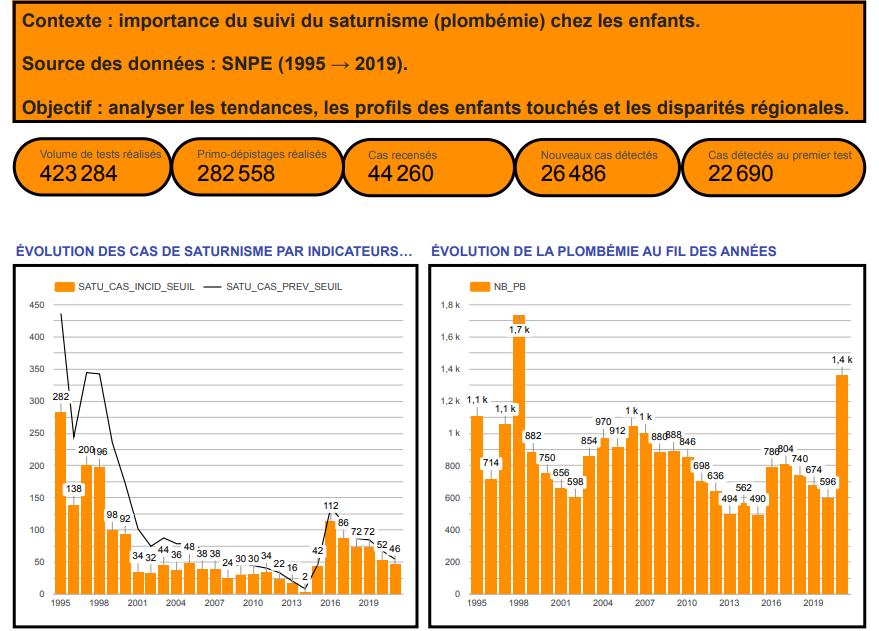
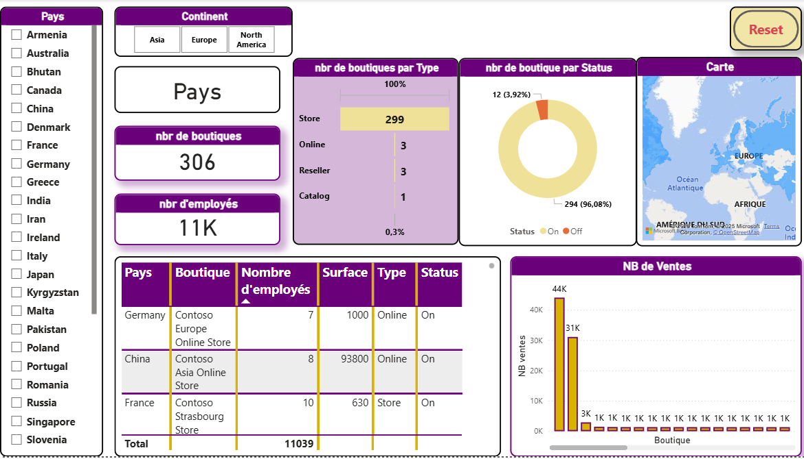
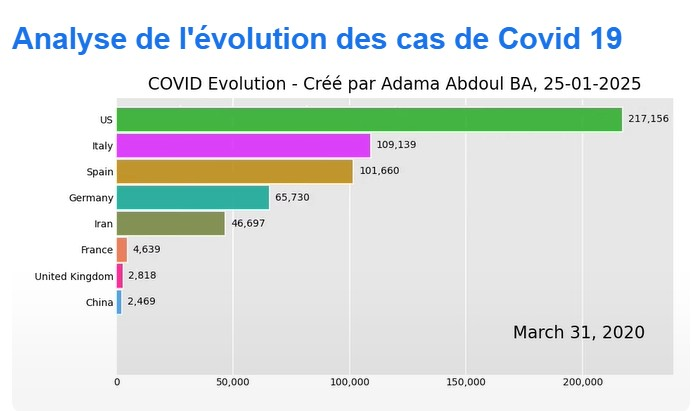
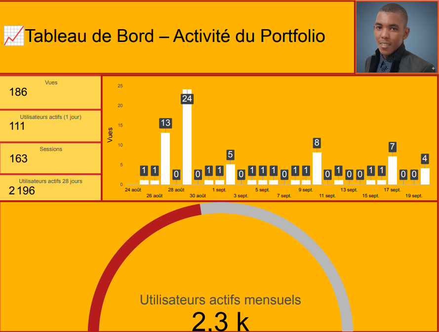
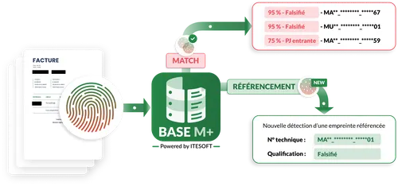
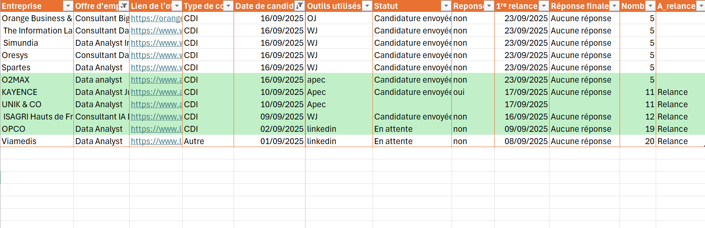

Bonjour, je suis
Transformer la donnée en décisions concrètes
Python · SQL · Power BI · Machine Learning
À propos
Je conçois des solutions data qui font gagner du temps, améliorent les décisions et automatisent les tâches répétitives. Mon parcours mêle modélisation prédictive, ETL et data visualisation, toujours au service des équipes terrain.
Passionné par le Machine Learning et les outils BI, j'ai travaillé chez Orange sur des projets d'automatisation et de catégorisation de flux traitement plus de 350 demandes par mois. Je cherche à rejoindre une équipe data pour continuer à créer de la valeur à partir de la donnée.
Me contacterCe que je fais
Extraction, nettoyage et transformation de données massives avec Python, SQL, Talend et Snowflake. Automatisation des workflows pour libérer du temps aux équipes métier.
Modèles prédictifs (XGBoost, Random Forest, CNN, NLP, Word2Vec) pour automatiser et améliorer la prise de décision à l'échelle.
Dashboards interactifs sur Power BI, Looker Studio et Plotly. Des KPIs clairs pour que chaque équipe puisse piloter son activité.
ACP, ACM, régressions, tests d'inférence — pour analyser les phénomènes complexes et valider les hypothèses métier avec rigueur.
Réalisations
Des projets concrets alliant Data Engineering, Machine Learning et visualisation métier.

Pipeline complet : récupération via API santé → stockage Snowflake → dashboard Looker Studio.
→ Suivi régional de 1995 à aujourd'hui, 100% automatisé

Dashboard interactif par produit, boutique et période pour piloter les décisions commerciales.
→ Vision 360° des performances en temps réel

Bar chart race animé combinant data engineering et narration visuelle pour rendre les données vivantes.
→ Évolution mondiale des cas, rendu cinématique

Récupération des données GA, visualisations automatisées pour suivre trafic, pages et comportements.
→ Pilotage du portfolio comme un produit

Comparaison régression logistique vs XGBoost pour identifier les transactions suspectes.
→ Réduction des pertes financières potentielles

Tableau Excel avec indicateurs automatiques pour identifier les candidatures à relancer.
→ Zéro candidature oubliée, relances ciblées
Analyse financière
Visualisations interactives réalisées avec Python, Pandas et Plotly.
import plotly.express as px
fig = px.line(data_btc_eth,
x=data_btc_eth.index,
y="Close_btc",
title="Prix de clôture BTC")
fig.show()data_btc_eth['Return_btc'] = \
data_btc_eth['Close_btc'].pct_change()
fig = px.line(data_btc_eth,
x=data_btc_eth.index,
y="Return_btc",
title="Rendement quotidien BTC")
fig.show()data_btc_eth['Volatility_btc'] = \
data_btc_eth['Return_btc'].rolling(30).std()
fig = px.line(data_btc_eth,
x=data_btc_eth.index,
y="Volatility_btc",
title="Volatilité BTC (30j)")
fig.show()cols = ['Close_btc','Close_eth']
data_norm = data_btc_eth[cols] / \
data_btc_eth[cols].iloc[0]
fig = px.line(data_norm,
x=data_btc_eth.index,
y=cols,
title="BTC vs ETH (normalisé)")
fig.show()Parcours
Script Python (Selenium, Pandas, Tkinter) pour traiter 130 fichiers et les distribuer via SharePoint — sans intervention manuelle.
Clustering + Word2Vec + XGBoost → catégorisation automatique de 350 demandes/mois.
SQL, Talend, VBA, Power BI : automatisation du suivi des commandes et des KPIs marketing.
Prédiction des durées de traitement des dossiers d'assurance : GLM, Gradient Boosting, Random Forest avec pandas, NumPy et Seaborn.
Stack technique
Travaillons ensemble
Disponible pour des opportunités en Data Analyse, Business Intelligence ou Data Science.